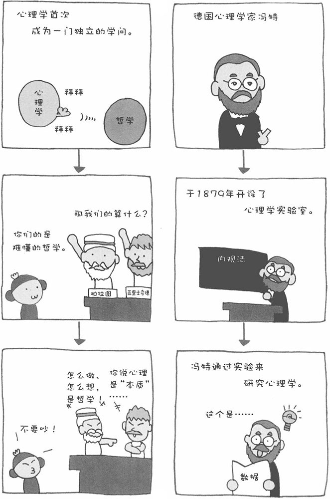
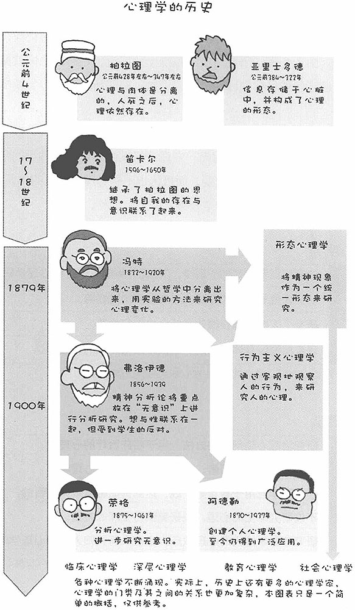

1、希腊哲学时代
我们很难为心理学的诞生划定一个准确的时间段。如果把理论性地研究人的心理作为心理学的开端，那么就要追溯到古希腊时代了。当时，心理学属于哲学的范畴。哲学家亚里士多德认为，人眼看到的信息在心脏转化为"心理"。柏拉图则认为，人的心理是独立于肉体存在的。人死之后，心理会作为"本质"继续留存下去。真庆幸自己没有出生在古希腊时代，心理学在当时真是一种令人难以捉摸的东西。
2、德国心理学家冯特的出现
对于心理学来说，19世纪德国心理学家冯特的出现是一个重大的转折点。冯特将心理学从哲学中分离出来，他尝试着用科学的实验方法来研究人的心理。冯特在德意志大学开设了心理学实验室（研究室）。从此之后，便有欧洲各地、美国甚至日本的学者来到冯特的实验室，跟随他学习心理学。这就是近代心理学的开端。
3、三个心理学流派
后来，冯特的实验心理学分化为三个较大的分支。一个是提倡用统一的形态来把握心理的形态心理学；第二个是瓦特生提出的对人的行为进行客观研究的行为主义心理学；还有一个就是弗洛伊德创造的精神分析学。

4、弗洛伊德的精神分析
弗洛伊德创造的精神分析法认为，在人类行为的背后有一种叫做"无意识"的东西。精神分析法主要用于分析心理构成和进行心理治疗。说到佛洛伊德，在百年后的现代心理学界可谓赫赫有名的人物，但在当时，他的观点却是不被认可的异端思想。不过后来，弗洛伊德的精神分析法不仅给心理学、医学带来了巨大影响，甚至对艺术和政治思想等各种各样的领域都带产生了很大的影响。
5、荣格的分析心理学
荣格是弗洛伊德的学生，他对弗洛伊德理论中关于"无意识"的部分进行了独创性的解释。他认为"无意识"分两种，还创建了自己的分析心理学理论。荣格的分析心理学理论认为，除了普遍的无意识之外，还存在一种具有个人差异的、后天产生的叫做"情结"的无意识。荣格的思想与弗洛伊德截然不同。荣格的研究超越了心理学的范畴，涉及到了灵魂的领域。
6、阿德勒心理学
阿德勒曾与弗洛伊德一同研究心理学，但后来离开了弗洛伊德。阿德勒最初对弗洛伊德的精神分析抱有浓厚的兴趣，但后来他所关注的焦点从精神内部转向了人际关系中，并创造出实践性的个人心理学。其有关帮助孩子自立、发展社会性的方法、以及老年精神护理等方法，至今还得到了广泛应用。阿德勒虽然在全世界范围内的知名度并不高，但他的阿德勒心理学（个人心理学）在日本的人气却非常高。
